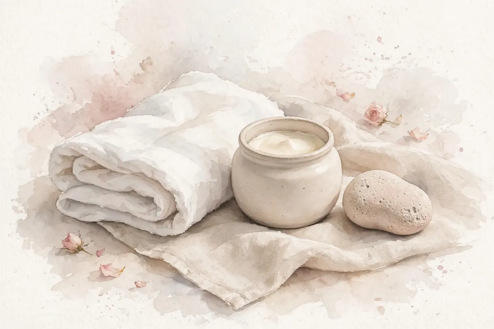

トップ ＞ ボディケア ＞ ひじ・ひざ・かかとのケア：部位で変える量の目安
ひじ・ひざ・かかとのケア：部位で変える量の目安

施術の仕事をしていると、お客様から「ひじやかかとって、どれくらいの量を塗ればいいんですか」と聞かれることがあります。ボディクリームやオイルの量は、顔のケアと違って、部位によって面積がまったく違います。同じクリームでも、ひじと背中では必要な量が違います。この記事では、特定の商品の話ではなく、ひじ・ひざ・かかとなど角質が気になる部位のケア量の考え方を整理します。私自身、施術の現場では、量を「塗る面積」で決めるようにしています。
部位で量が違う理由
量が部位で違うのは、まず面積が違うからです。ひじやひざは、手のひらに収まるくらいの広さですが、かかとは足裏全体に広がります。同じ「1回分」でも、塗る場所の広さが違えば、必要な量も変わります。もうひとつは、皮膚の状態です。角質が気になる部位は、皮膚が厚く感じられる場所が多く、クリームが広がりにくいことがあります。薄く伸ばそうとすると、途中で指が止まってしまうことがあります。
施術では、クリームやオイルの量を、塗る面積と広がり方で決めます。顔と体では面積が違いますし、同じ体でも、腕と脚では広さが違います。表示の「適量」を出発点にして、塗りながら足りなければ継ぎ足す、という使い方が無駄になりにくいと感じています。一度にたくさん出すと、余った分が手に残ってしまいます。
塗る量の目安
量の目安は、身近なものの大きさで考えると分かりやすいです。ひじやひざは、さくらんぼ大くらいを出発点にして、広がり具合を見ながら調整します。かかとは、足裏全体に広げるため、ひじの倍くらいを目安にする人もいます。ただし、これはあくまで出発点の目安で、クリームのテクスチャーによって広がり方は変わります。のびのよいものは少なめで足りますし、かためのものは多めに必要になることがあります。
量を決めるときは、場所ごとに小分けにして出すのがコツです。ひじの分、ひざの分、かかとの分、と分けて出せば、出すたびに量を確認できます。「全体の分を一度に出す」のではなく、「部位ごとに分けて出す」ことで、多すぎる・少なすぎるの調整がしやすくなります。塗るときは、肌の上で指が滑る感触を目安にして、止まるようなら少し継ぎ足します。
塗るタイミングと頻度の考え方
塗るタイミングは、入浴後や寝る前が一般的です。入浴後は、皮膚が水分を含んでいて、クリームが広がりやすい時間です。寝る前は、塗ったあとに靴下や長袖を着て、そのまま休めるため、ケアの時間が取りやすい形です。朝に塗る場合は、衣類につきにくい量に調整するのが基本です。塗ってすぐ服を着ると、衣類に移ってしまうことがあります。
頻度は、部位の状態に合わせて考えます。毎日塗る人もいれば、数日おきにまとめて塗る人もいます。どちらが正しいという決まりはありません。自分の生活リズムに合う頻度で、続けられる形を選ぶのが基本です。塗るのを忘れた日があっても、翌日に多めに塗ればよい、というものではありません。量は、1回ごとに表示の目安に沿って使うのが無難です。
塗ったあとの手の扱いも、現場で気をつけている点です。塗った手のひらに残ったクリームは、手の甲や指先に広げてから、手を洗うようにしています。余った分をそのままにしておくと、手に残ってベタつく原因になります。塗る・広げる・手を洗う、までを一連の流れとして覚えておくと、ケアのあとがすっきりします。
迷ったときの基本
量に迷ったら、まずはパッケージの表示通りに使うのが基本です。表示は、その商品の容器やテクスチャーを前提に決められています。使っていて肌に合わない感じがしたときは、使用をいったんやめて、気になる場合は皮膚科などの専門家に相談してください。この記事は量の読み方の案内であり、商品ごとに表示がある場合は、そちらが優先です。
セラフィナ「かかととひじは、同じクリームでも量が違うんだね。部位ごとに分けて出すのがコツだよ」